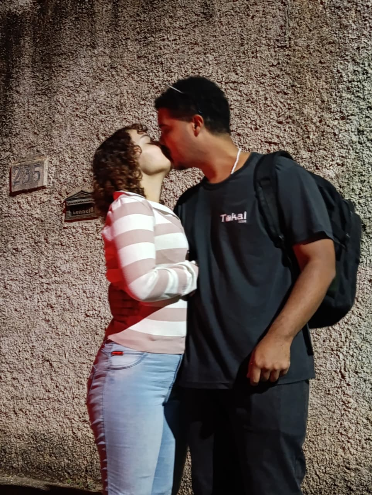

Existem milhares de coisas que eu amo em você, mas são os pequenos detalhes que fazem eu me apaixonar todos os dias.
Seus olhos grandes têm um jeito único de falar comigo sem precisar de palavras. Às vezes, basta uma única olhada sua para transformar completamente o meu dia. E existe aquela olhadinha especial que você faz, que me deixa sem reação até hoje.
Seu cabelo é uma das coisas que mais gosto de sentir perto de mim. O cheiro dele é daqueles que trazem paz, conforto e vontade de ficar ali para sempre. É engraçado como algo tão simples consegue se tornar uma das minhas partes favoritas dos nossos momentos juntos.
Eu amo o jeito delicado com que você me toca, os seus beijos, o carinho que coloca em cada abraço e a forma como cuida de mim sem nem perceber. Em cada gesto seu existe uma gentileza que me faz admirar você ainda mais.
Talvez um dos momentos que eu mais guarde no coração seja quando dormimos juntos. Quando você me abraça durante a noite ou quando, ainda sonolenta pela manhã, me procura na cama para ficar mais pertinho. São momentos que podem parecer simples para qualquer outra pessoa, mas que para mim significam muito mais do que consigo explicar.
São esses detalhes que fazem com que eu me apaixone por você todos os dias. Não apenas pelo que você é, mas pela forma como transforma os momentos mais comuns em lembranças que eu quero guardar para sempre.
E talvez seja exatamente por isso que eu escolho você todos os dias. Escolho o seu sorriso, o seu abraço, a sua companhia, o seu jeito de cuidar de mim e todos os pequenos detalhes que fazem você ser quem é. Escolho construir nossos sonhos, compartilhar nossas conquistas e enfrentar qualquer dificuldade ao seu lado.
Porque o nosso combinado sempre fez sentido para mim: "se um não gosta, dois não gostam". Não porque precisamos pensar igual em tudo, mas porque aprendemos a caminhar juntos, respeitando, cuidando e escolhendo um ao outro todos os dias.
Você transformou momentos simples em algumas das melhores lembranças da minha vida. Fez com que eu entendesse que o amor está nos detalhes, nos gestos silenciosos, nos abraços demorados, nos beijos inesperados e até mesmo na forma como você me procura na cama pela manhã para ficar mais perto de mim.